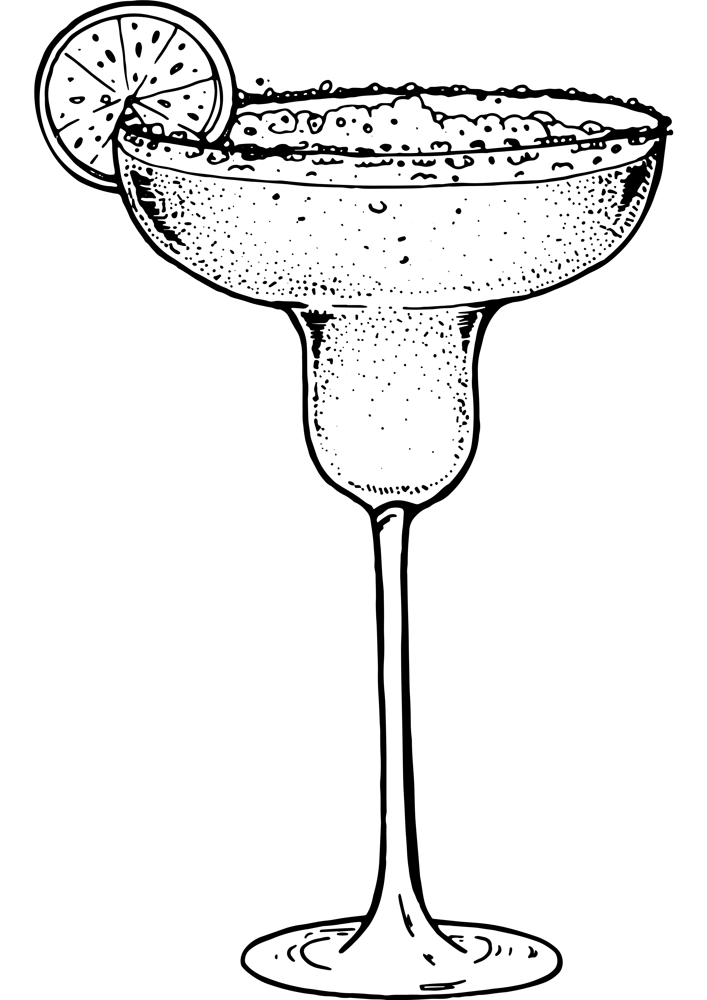
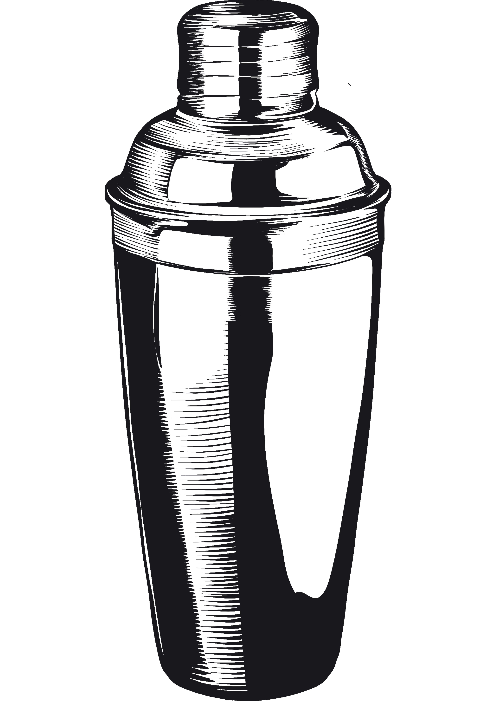

Cerise d’Asie 🍹
Un cocktail vibrant où la douceur du litchi et de la cerise rencontre l’acidité du citron vert et l’énergie épicée du ginger beer. Fruité, pétillant et irrésistiblement exotique.

🥃 Ingrédients
- 3 cl Vodka
- 2 cl Liqueur de litchi
- 2 cl Sirop de cerise
- 1 cl Jus de citron vert
- 4 cl Ginger beer
🍸 Verre

Verre Margarita🧊 Préparation

Shaker- Remplir un shaker de glace
- Ajouter la vodka, la liqueur de litchi, le sirop de cerise et le jus de citron vert
- Shaker énergiquement
- Filtrer dans le verre
- Compléter avec le ginger beer
✨ Décoration
- Cerise — 1 pièce
- Citron vert — 1½ tranche